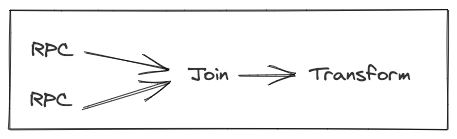

Stitch vs Future¶
Both Stitch and Futures represent operations that are to be performed. These operations form a graph of computations that depend on other computations to be completed first, but there are some key differences which set Stitchs and Futures apart.
Futures represent a running computation and Stitch represents a “plan” to run a computation (similar to a database query). Once a Stitch is created it doesn’t do anything until it’s run, then when it’s run, it can be optimized since Stitch knows about the entire computation.

A typical example of an async computation may consist of some input being transformed, some Remote Procedure Call (RPC) operations being performed, the results combined and transformed into a final result.
With futures this may look like:
val f0:Future[T]
val f1 = f0.map(transform)
val f2 = f1.ensure(sideEffect)
val f3 = f1.flatMap(performRPC)
val f4 = f1.flatMap(performRPC)
Future.join(f3, f4).map(transform)
This would then be executed eagerly, where as soon as f0 is ready it would be transformed into f1, then both RPCs and the side effect would kick off at the same time. Once the RPCs are done they would be joined then transformed.
This computation would look similar with Stitch:
val s0:Stitch[T]
val s1 = s0.map(transform)
val s2 = s1.ensure(sideEffect)
val s3 = s1.flatMap(performRPC)
val s4 = s1.flatMap(performRPC)
val s5 = Stitch.join(s2, s3, s4).map(transform)
With the above computation, nothing will happen until Stitch.run(s5) is called. Once that happens, the computation will be started and a Future will be returned which will complete when the Stitch is done running. It’s worth noting that s2 must be added to the join in this example otherwise sideEffect won’t run, this is discussed more in the Lazy section.
The first pass will simplify the computation by running all the synchronous parts resulting in
At this point Stitch will batch the calls for both of the RPCs together. So rather than making 2 separate RPCs with a size of 1, Stitch will make 1 RPC with a size of 2.

With the results of the RPC available, they are substituted back into the graph and the next simplification occurs which gets a final result.
Next Why use Stitch?